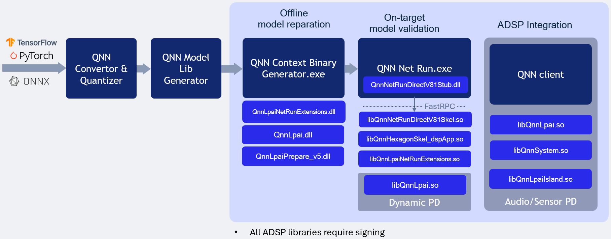

QNN LPAI Native aDSP Backend Type for Windows on Arm¶
LPAI Native DSP Backend Type Execution on WoS

Overview¶
The QNN LPAI Native aDSP Backend Type on WoS (Windows on Snapdragon) is designed to enable efficient execution of the LPAI backend by providing direct access to the DSP (Digital Signal Processor) hardware. This approach eliminates the overhead associated with data and control transfer via the IPC (Inter-Process Communication) mechanism, resulting in significantly reduced latency and improved runtime performance. Applications that can access input sources such as audio, camera, or sensors directly on the aDSP can run independently of the main operating system. To use the native aDSP path, these applications must be integrated into either the audio or sensor power domain (PD).
Execution on a physical device using the native aDSP target is supported exclusively for offline-prepared graphs. This mode does not support dynamic graph compilation or runtime graph generation.
To run on a specific target platform, you must use binaries compiled for that platform. The appropriate library can be selected using the QNN_TARGET_ARCH environment variable (see more details below).
Prerequisite¶
All commands to be executed in windows powershell. Open C: drive in windows explorer -> Right click anywhere in the window and select “Open in Terminal”
Target Platform Configuration¶
To deploy the LPAI backend on a specific target, configure the environment using the correct architecture-specific binaries. Set the QNN_TARGET_ARCH variable as shown below:
REM Example for Windows on Arm targets
$env:QNN_TARGET_ARCH = "aarch64-windows-msvc"
Supported target architectures include:
aarch64-windows-msvc for Windows on Arm platforms
hexagon-v<version> for Qualcomm Hexagon DSP platforms
Important
Ensure that your target platform supports the necessary runtime environment for LPAI execution. Refer to the Available Backend Libraries table for platform-specific compatibility and deployment guidance.
Setting Environment Variables on WoS device¶
REM Set target architecture
$env:QNN_TARGET_ARCH = "aarch64-windows-msvc"
REM Set hardware version
$env:HW_VER="v5"
REM Set Hexagon version
$env:HEX_VER="81"
$env:HEX_ARCH="hexagon-v$env:HEX_VER"
REM Set configuration paths where model and configuration files are located
$env:QNN_MODEL_BIN_PATH = "C:\test"
$env:QNN_CONFIG_PATH = "C:\test"
Note
To execute the LPAI backend on a WoS device, the following conditions must be met:
The following Lpai artifacts in
$env:QNN_SDK_ROOT\lib\lpai-$env:HW_VER\unsignedmust be signed by the client:libQnnLpai.solibQnnLpaiNetRunExtensions.so
The following qnn-net-run artifacts in
$env:QNN_SDK_ROOT\lib\$env:HEX_ARCH\unsignedmust be signed by the client:libQnnHexagonSkel_dspApp.solibQnnNetRunDirectV$($env:HEX_VER)Skel.so
Prepare config.json file for direct-mode, where is_persistent_binary is required for direct-mode:
{
"backend_extensions": {
"shared_library_path": "libQnnLpaiNetRunExtensions.so",
"config_file_path": "lpaiParams.conf"
},
"context_configs": {
"is_persistent_binary": true
}
}
Prepare lpaiParams.json file as given below:
{
"lpai_backend": {
"target_env": "adsp",
"enable_hw_ver": "v5"
}
}
Deployment Steps on WoS Device¶
Create test directory
mkdir C:\qnn\LPAI
Copy Configuration Files
copy $env:QNN_CONFIG_PATH\config.json C:\qnn\LPAI
copy $env:QNN_CONFIG_PATH\lpaiParams.conf C:\qnn\LPAI
Copy offline LPAI generated model
copy $env:QNN_MODEL_BIN_PATH\qnn_model_8bit_quantized.serialized.bin C:\qnn\LPAI
Copy input data and input lists
copy $env:QNN_MODEL_BIN_PATH\input_list.txt C:\qnn\LPAI
Copy-Item -Path "$env:QNN_MODEL_BIN_PATH\inputs" -Destination "C:\qnn\LPAI" -Recurse -Force
Copy LPAI libraries
copy $env:QNN_SDK_ROOT\lib\lpai-$env:HW_VER\unsigned\libQnnLpai.so C:\qnn\LPAI
copy $env:QNN_SDK_ROOT\lib\lpai-$env:HW_VER\unsigned\libQnnLpaiNetRunExtensions.so C:\qnn\LPAI
Copy qnn-net-run libraries
copy $env:QNN_SDK_ROOT\lib\$env:HEX_ARCH\unsigned\libQnnHexagonSkel_dspApp.so C:\qnn\LPAI
copy $env:QNN_SDK_ROOT\lib\$env:HEX_ARCH\unsigned\libQnnNetRunDirectV$($env:HEX_VER)Skel.so C:\qnn\LPAI
Copy qnn-net-run tool and dependencies
copy $env:QNN_SDK_ROOT\bin\$env:QNN_TARGET_ARCH\qnn-net-run.exe C:\qnn\LPAI
copy $env:QNN_SDK_ROOT\lib\$env:QNN_TARGET_ARCH\QnnNetRunDirectV$($env:HEX_VER)Stub.dll C:\qnn\LPAI
Set up environment and execute model
cd C:\qnn\LPAI
$env:PATH="C:\qnn\LPAI;$env:PATH"
qnn-net-run.exe --backend libQnnLpai.so --direct_mode --retrieve_context qnn_model_8bit_quantized.serialized.bin --input_list input_list_float.txt --config_file config.json
Note
The output folder for WoS is always relative to the driver fastrpc path: C:\Windows\System32\drivers\DriverData\Qualcomm\fastRPC
- For example:
qnn-net-run --output test_output
The output files will be found at: C:\Windows\System32\drivers\DriverData\Qualcomm\fastRPC\test_output
- For example:
qnn-net-run --output .\another_test\output
The output files will be found at: C:\Windows\System32\drivers\DriverData\Qualcomm\fastRPC\another_test\output